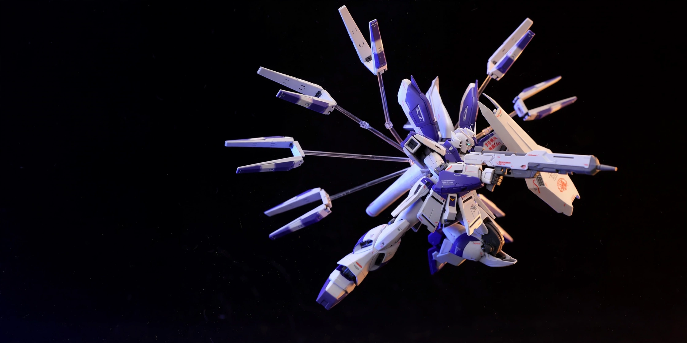
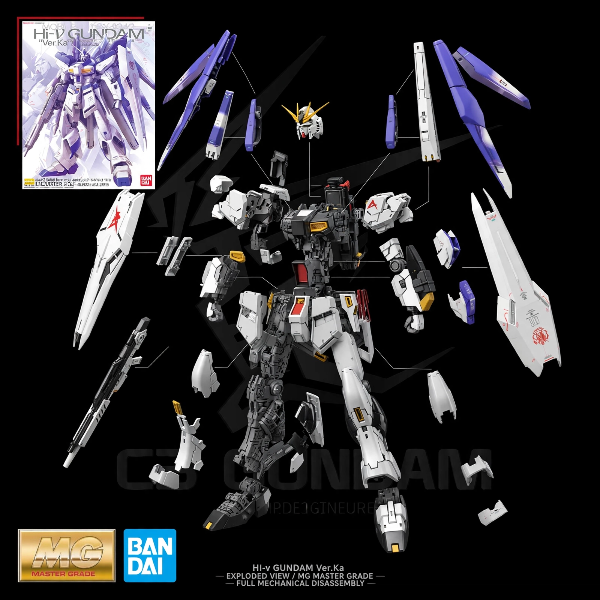
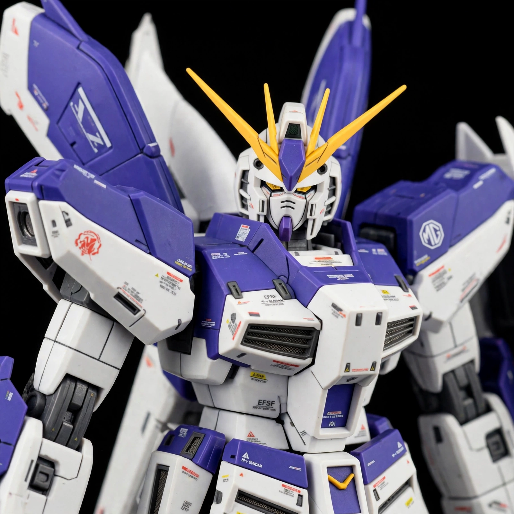
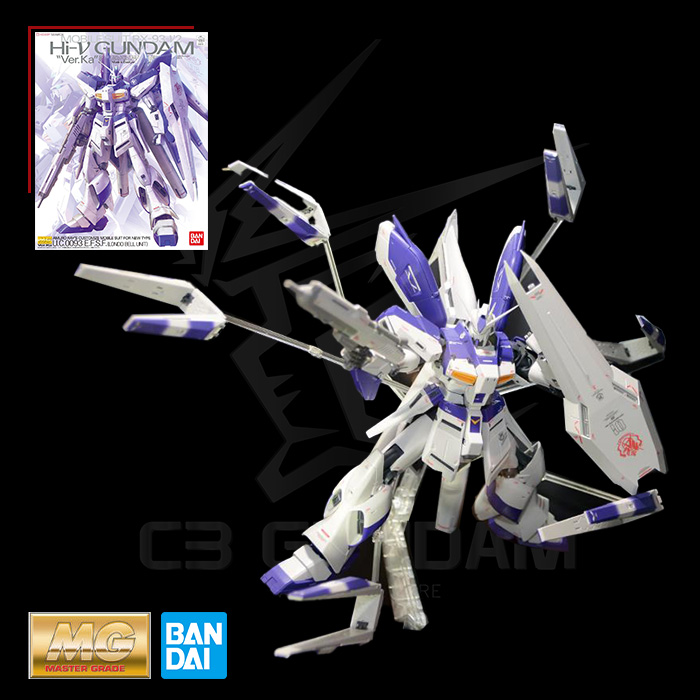

Khung xương
Phần lõi màu xám đậm giữ toàn bộ dáng đứng và khớp chuyển động.
MG 1/100 • Bandai • Ver.Ka
Một mẫu Master Grade để trưng bày, không chỉ để lắp. Trắng, tím và vàng — sắc nét tới từng đường panel, và fin funnel mở ra như một đôi cánh.

01 — Tổng quan
Hi-V Ver.Ka không cần tạo dáng quá đà. Chỉ cần đặt lên kệ, để ánh sáng đi qua lớp giáp trắng và mảng tím đậm, là đủ thấy vì sao dòng Ver.Ka luôn được săn.
Bản trình bày này tách mẫu thành từng lớp — khung xương, giáp ngoài, fin funnel và vũ khí — để bro nhìn rõ cấu trúc trước khi quyết định mua hay lắp.
02 — Exploded view
Tiếp tục cuộn — các lớp giáp sẽ tách dần khỏi khung xương.

Phần lõi màu xám đậm giữ toàn bộ dáng đứng và khớp chuyển động.
Các mảng trắng và tím tách ra, để lộ đường panel và decal bên dưới.
Sáu funnel phía trên, mở ra như cánh — điểm nhận diện rõ nhất của Hi-V.
03 — Từng bộ phận
V-fin vàng nhọn, mắt vàng, mặt nạ trắng với đường khắc mảnh. Nhìn gần mới thấy độ sạch của chi tiết.
Khoang ngực, khe gió và mảng giáp tím tạo chiều sâu. Đây là phần “ăn ảnh” nhất khi chụp cận.
Vai lớn, giáp tay trắng — tím, khớp rõ ràng, cầm súng chắc tay mà không bị thô.
Váy giáp và giáp chân cân đối, giúp dáng đứng vững và tạo được nhiều tư thế trưng bày.
Sáu funnel sau lưng, có thể xếp gọn hoặc bung ra. Bung ra là cả kệ bỗng có chiều sâu.
Beam rifle dài và khiên lớn trắng — tím, đủ để tạo dáng hành động mà không cần thêm phụ kiện.

04 — Chi tiết
Đường panel không chỉ là đường khắc cho có. Nó chia mảng giáp thành từng khối có lý, để ánh sáng và bóng đổ làm phần còn lại. Decal nhỏ, đặt đúng chỗ, khiến mẫu trông như một cỗ máy thật thay vì một khối nhựa.
Ảnh gốc
Đây là ảnh mẫu đã lắp hoàn thiện do shop đăng. Các ảnh còn lại trong trang là hình minh họa AI dựa trên mẫu này, để bro hình dung góc chụp và exploded view — không phải ảnh chụp thật của từng góc.

05 — Thông số
06 — Mua hàng
Giá và tình trạng dưới đây được kiểm tra ngày 23/11/2026 tại C3 Gundam. Giá có thể đổi, bro kiểm tra lại trên trang shop trước khi trả tiền.
MG 1/100 RX-93-2 Hi-V Ver.Ka
1.550.000đ
● Còn hàng — giao toàn quốc (COD)
Trang này không bán hàng và không nhận thanh toán. Link trên chỉ dẫn tới trang sản phẩm của shop.